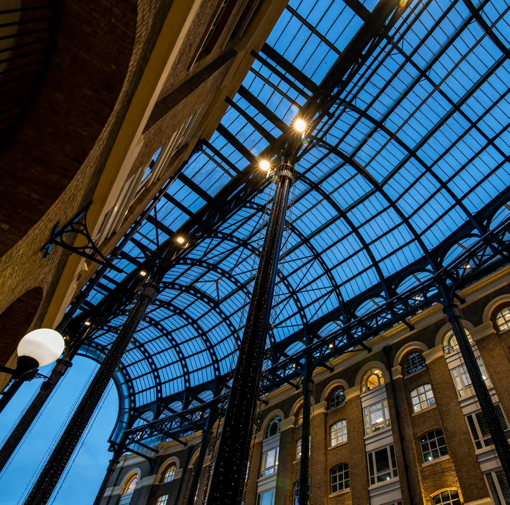
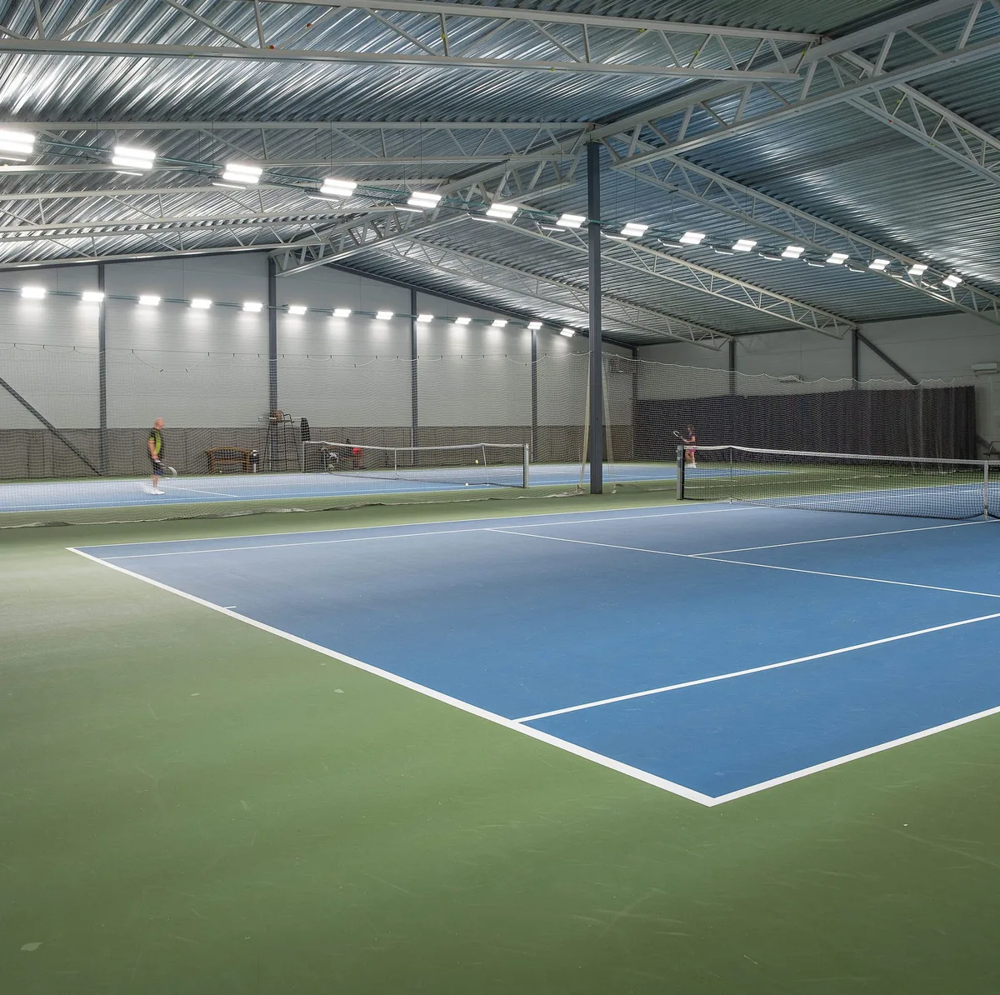
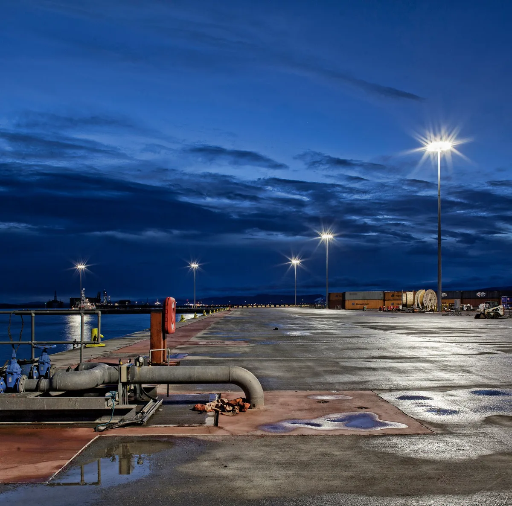
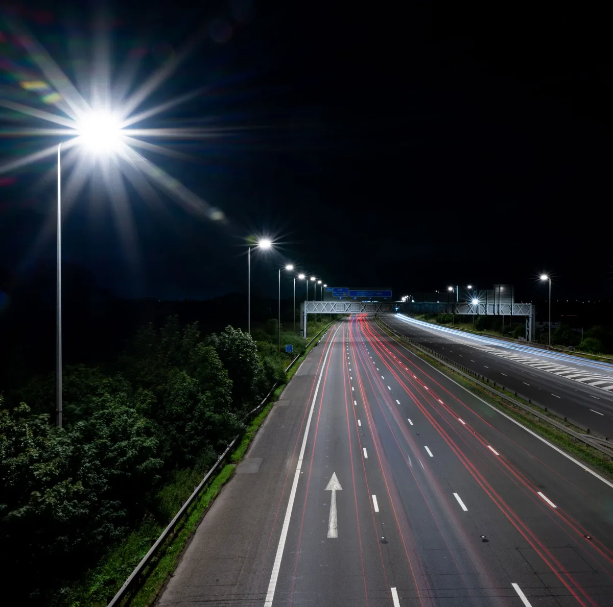
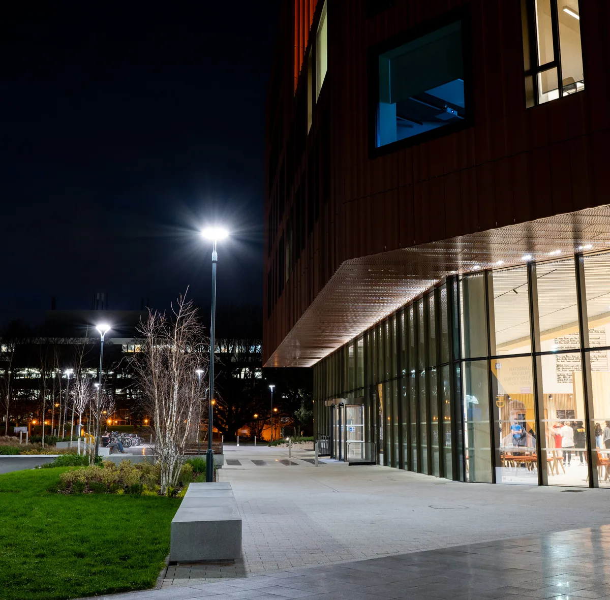

Project Applications
Solution Examples
Manufacturer reference projects — the products and project types we work with, ahead of our own Australian project record.

Hays Galleria, London
Heritage & retail — Prismpack luminaires, painted black, replaced ageing HID highbays beneath the Grade II-listed glazed roof without disrupting the exposed steelwork.
Read the story →
Gothenburg Lawn Tennis Club, Sweden
Sport & recreation — rotatable Prismaspace optics met EN 12193 Class I across 16 indoor courts, cutting energy use 30% against the fluorescent fit-out it replaced.
Read the story →
Port of Nigg, Scotland
Marine & industrial — high-mast HMAO luminaires lit a 900m deep-water quayside for a £20M redevelopment, with glare control considered for the neighbouring town.
Read the story →
National Highways, North West England
Road & infrastructure — a £132M, 6,000-luminaire V-MAX II retrofit across the region's motorway network, with Dark Sky-approved optics and CMS dimming by route.
Read the story →
University of Warwick — Faculty of Arts
Education & civic — Signature post-tops lit the approach and public realm of the BREEAM Excellent-rated arts building with glare-controlled, fully shielded optics.
Read the story →